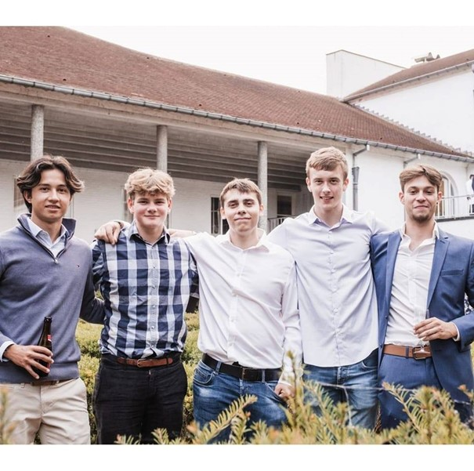
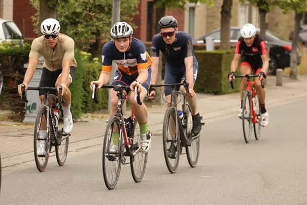
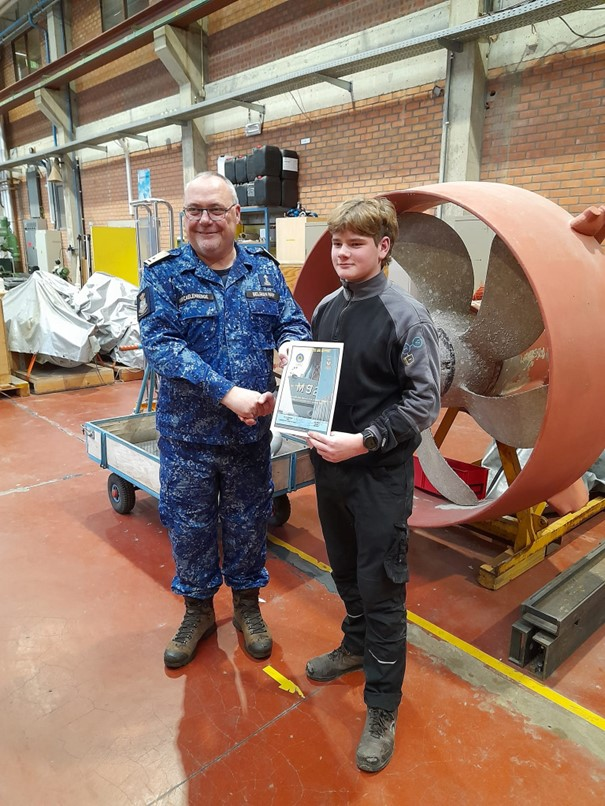
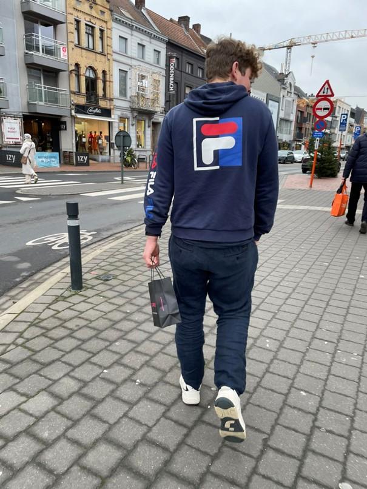
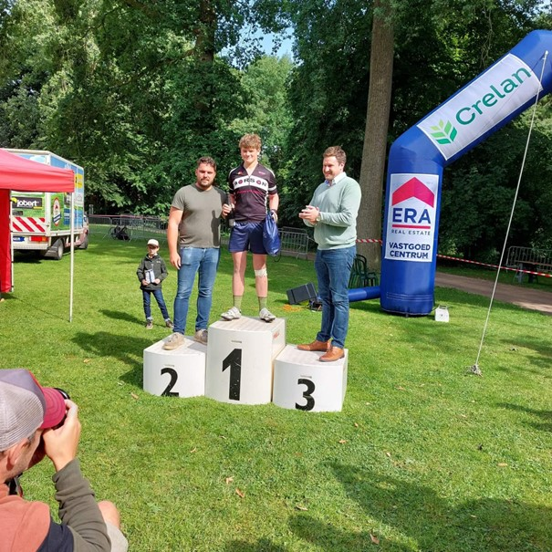
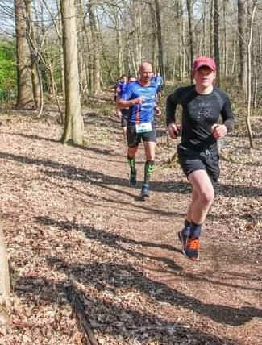

- Lukas Pozzolo, geboren in het schilderachtige Torhout, is nu een trotse inwoner van Zwevezele.
- Als mede-Chiro-lid van Zwevezele deelt Lukas zijn passie voor leuke activiteiten en gemeenschapszin. 
- Buiten Chiro heeft Lukas een levendige interesse in verschillende hobby's, waaronder hardlopen, fietsen en pingpongen.
- Deze veelzijdige jongeman heeft een competitieve geest en gaat binnenkort een uitdagende reis aan door een opleiding tot onderofficier bij het leger te volgen. 
- Lukas is niet bang voor competitie en heeft een winnaarsmentaliteit die hem vaak tot succes leidt in verschillende ondernemingen.
- Een opvallende prestatie is dat Lukas de Regionale Schaakkampioen van West-Vlaanderen (RSWV) is, wat zijn schaaktalent benadrukt.
- Met zijn schaakvaardigheden heeft hij niet alleen lokale erkenning verdiend maar heeft hij ook bewezen een meester in het spel te zijn.
- Zijn schaaktriomfen getuigen van zijn toewijding, strategisch denken en vastberadenheid om zijn doelen te bereiken.
- Zwevezele kan trots zijn op deze dynamische jonge man die niet alleen zijn gemeenschap vertegenwoordigt, maar ook zijn eigen ambities nastreeft.
- Lukas belichaamt het idee van een evenwichtige levensstijl door zowel zijn academische als persoonlijke interesses te koesteren.
- Zijn keuze voor een carrière als onderofficier benadrukt zijn vastberadenheid om dienstbaar te zijn aan het land en een verschil te maken. 
- Binnenkort zal Lukas zich inzetten voor de legeropleiding, waar zijn toewijding en discipline ongetwijfeld opmerkelijke resultaten zullen opleveren. Als RSWV heeft Lukas niet alleen zijn schaaktalent ontwikkeld, maar heeft hij ook waardevolle levenslessen geleerd over doorzettingsvermogen en fair play.
- In Zwevezele wordt Lukas niet alleen gewaardeerd om zijn prestaties, maar ook om zijn vriendelijke en ondersteunende houding. 
- Door zijn diverse hobby's en betrokkenheid bij de gemeenschap laat Lukas zien dat het mogelijk is om een gebalanceerd en vervuld leven te leiden.
- De komende jaren beloven spannend te worden voor Lukas, met nieuwe uitdagingen en kansen die zijn pad zullen kruisen. 
- Zwevezele en Torhout hebben met Lukas Pozzolo een lokale held om trots op te zijn, een inspirerend figuur voor jong en oud.
- We kijken uit naar de verdere successen van Lukas, zowel in zijn schaakcarrière als in zijn toekomstige rol als toegewijde onderofficier. 